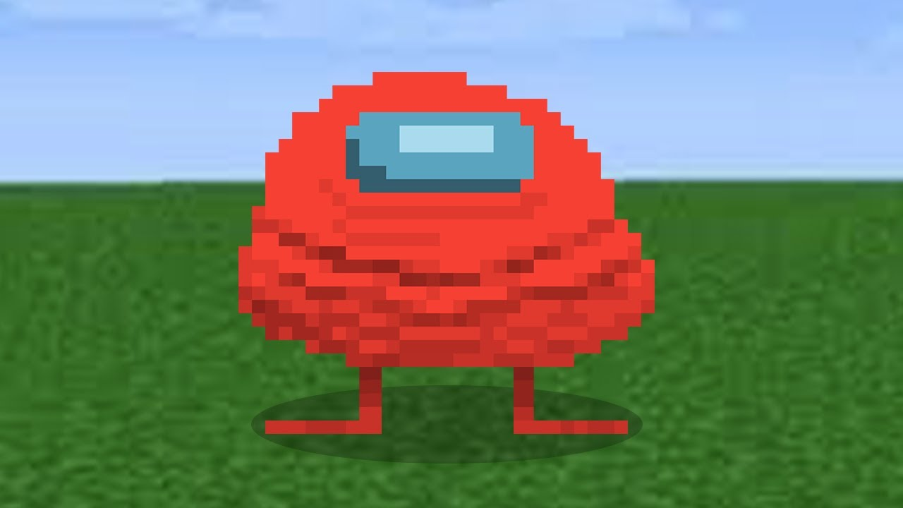
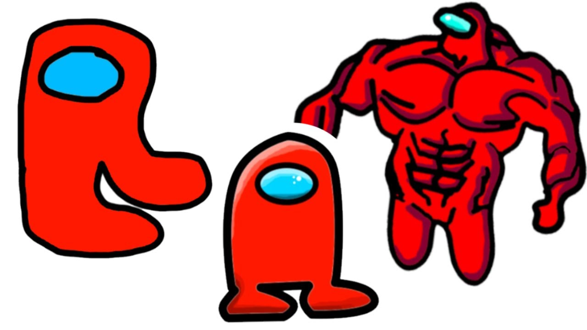

Название «Амогус» представляет собой искажённое наименование вышедшей в 2018 году и ставшей популярной в 2020 году многопользовательской двухмерной игры Among Us. В 2020 году минималистичные рисунки персонажей игры — космонавтов и подражающих им импостеров/импосторов (предатели) — заполонили социальные сети. Именно это схематичное изображение космического человечка получило также обозначение «Амогус»[4]. В январе[6] 2021 года постироничные шутки на Reddit получили общий термин «Амогус». Название «Амогус» также было именем перерисованного белого космонавта, вставленного в комикс художника Stonetoss, которого пользователи называли «турбодевственником»[5]. После публикации комикса с данным изображением на сайте Reddit «Амогус» (и изображение, и слово) стал самостоятельным мемом, который активно добавлялся в другие комиксы и мемы. Мемное слово комбинировалось с другими реальными/выдуманными лексемами на -ус/-us, что придавало исходному содержанию абсурдность. Изображение человечка отождествляется всё чаще именно с импостером. Серия вариаций привела к формированию обобщённого значения мемной фразы «нечто негативно оцениваемое как надоевшее, навязчивое/тупое/сомнительное/бессмысленное»[4]. ВЗЯТО ИЗ ВИКИПЕДИИ!